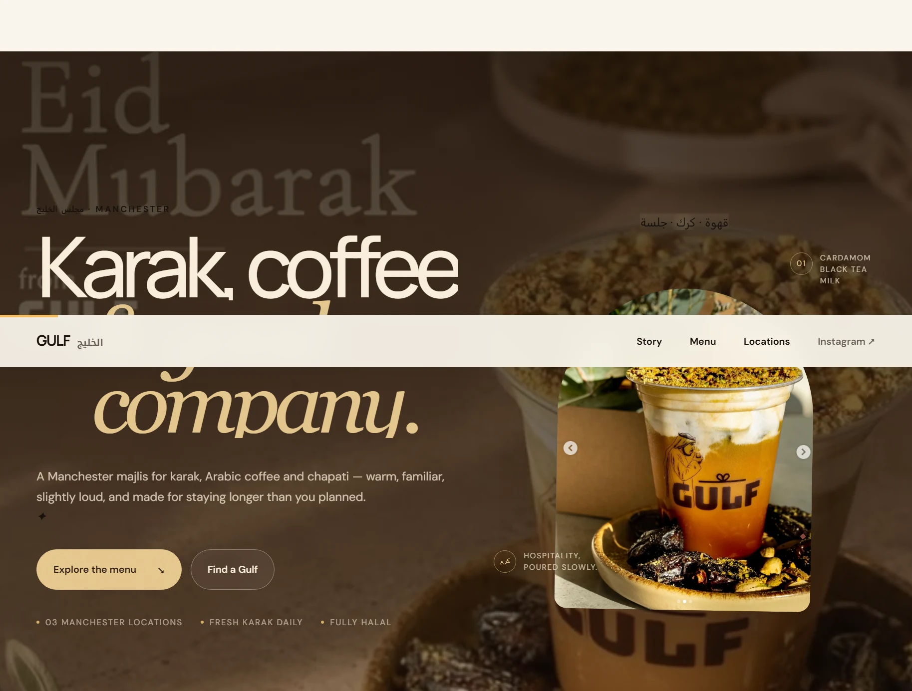

DAY 01 / THE FIRST SHIP
Gulf MCR
The first public challenge build. It made the idea real: research a business, build around its identity, deploy the result and put it in front of someone instead of keeping it inside VS Code.
Lesson / atmosphere still needs structure